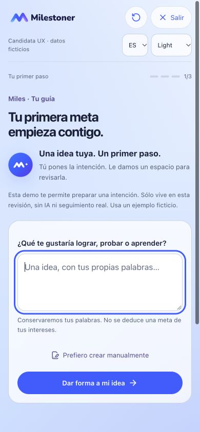
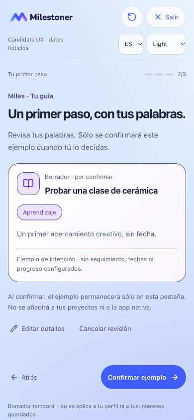
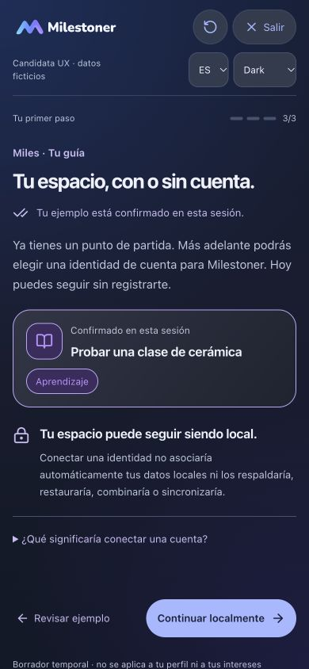
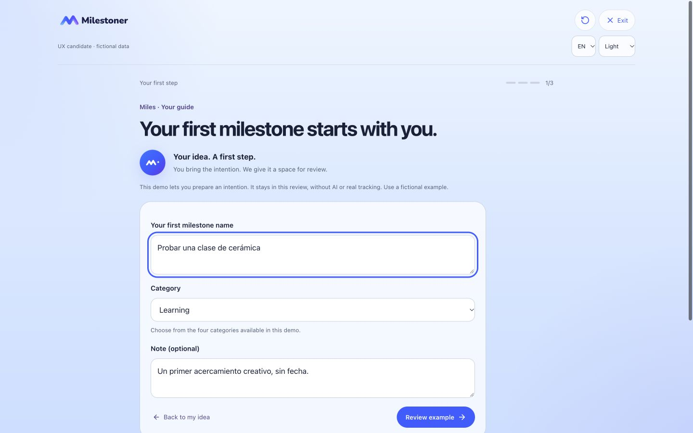
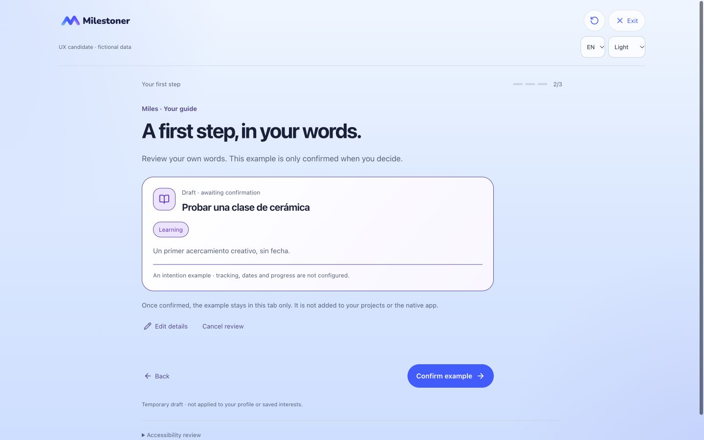
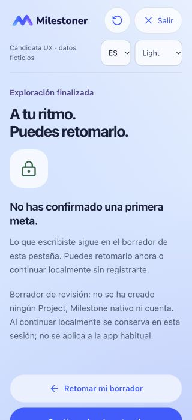

PENDING OWNER VISUAL AND FUNCTIONAL REVIEW. Bienvenida → nombre opcional → intereses → Universo → primera intención → revisión y confirmación explícita → invitación opcional → continuar localmente.
El alcance es un ejemplo temporal de intención: título, categoría elegida y nota opcional. No es un Project Web ni una definición/Milestone nativa validada. No se crean seguimiento, progreso, eventos ni registros reales. Los contratos nativos se consultaron en modo lectura; no se publica código o documentación privada.
Se puede escribir una idea o entrar directamente a edición manual. Revisar o cancelar no confirma. La confirmación explícita conserva una sola instantánea en esta pestaña; Atrás y recarga no la duplican. Posponer conserva el borrador sin mostrar éxito ni invitación de cuenta. Una sesión nueva empieza vacía; los enlaces no precargan las capturas.
Continuar localmente abre Home sin aplicar el ejemplo ni los datos del onboarding a la app. El borrador de revisión permanece en esta sesión, separado de Projects, Perfil, Universo y tracking; al volver puede retomarse. El encabezado Salir/Reiniciar descarta explícitamente sólo esta exploración.
La invitación se ofrece sólo tras confirmar. Apple y Google se mencionan como futuros proveedores en esta revisión, sin botones de inicio de sesión. Identificarse y asociar datos son pasos distintos: no hay promesa de respaldo, restauración, mezcla ni Sync. Cuenta/conflictos/lifecycle quedan para V2.5C.3.



El texto del ejemplo fue escrito en español y permanece literal al cambiar el idioma de la interfaz.



Pendiente de aprobación: presentación de esta candidata y alcance futuro de configuración/validación nativa completa, catálogo autoritativo, creación real y revisiones posteriores. La recuperación de sesión Web no cambia la política de sesión manual de iOS. Sin OAuth, backend, enrollment ni sincronización. No se certifican dispositivos físicos ni VoiceOver hablado.